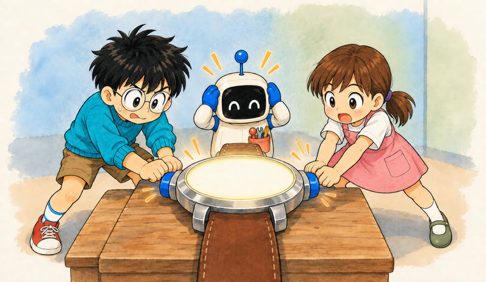
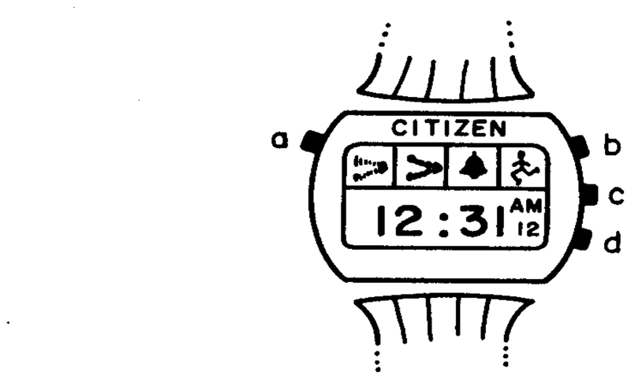

Feature 01 · ARTICLE · 1987 06
Statecharts, Part 1: Depth and Orthogonality
Reactive systems, the kind that must keep answering events from outside and inside, are hard to describe in a way that is both clear and rigorous. States and events are a natural medium for them, but a flat state diagram drowns in an exponentially growing number of states. Statecharts extend state diagrams with three elements: hierarchy, concurrency and communication. States nest inside states, so one arrow leaving a superstate stands for arrows leaving all its substates. States split into independent components, so two components of a thousand states each need not be drawn as a million. We intend to demonstrate that statecharts counter many of the objections raised against conventional state diagrams, and make specification by diagrams an attractive and plausible approach.

The problem
A reactive system, unlike a transformational one, is largely event-driven, continuously reacting to external and internal stimuli: telephones, automobiles, communication networks, operating systems, avionics, the man-machine interface of ordinary software. Its behavior is the set of allowed sequences of input and output events, conditions and actions, perhaps with timing constraints. Such a set, usually very large and complex, does not lend itself to friendly, level-by-level descriptions. Transformational systems have excellent methods for decomposition. For reactive systems, we are of the opinion that the problem has not yet been satisfactorily solved.
The basic fragment is a transition: “when event a occurs in state A, if condition C is true at the time, the system transfers to state B”. Engineers already talk this way. The trouble is that a complex system described naively needs every combination of states laid out flat, which is unstructured, unrealistic and chaotic. A useful approach must be modular and hierarchical, must relax the requirement that all combinations be represented explicitly, and must handle statements such as:
“in all airborne states, when yellow handle is pulled seat will be ejected” (clustering into a superstate);
“gearbox change of state is independent of braking system” (orthogonality);
“when selection button is pressed enter selected mode” (more general transitions);
“display-mode consists of time-display, date-display and stopwatch-display” (refinement).
Technically, the kernel is AND/OR decomposition of states, transitions between levels, and a broadcast mechanism for communication between concurrent components. The name “statecharts” was chosen, for lack of a better one, as the one unused combination of “flow” or “state” with “diagram” or “chart”. The running example is the author’s Citizen Quartz Multi-Alarm wristwatch: simple enough to fit almost entirely, complex enough to illustrate the method.
Depth: clustering and refinement


Trees and line-graphs waste the page: lines and points have no width, and location means nothing. We use rounded boxes for states and let encapsulation express hierarchy. Arrows may start and end at any level.
If one event takes the system to B from either A or C, we cluster A and C into a superstate D and replace the two arrows by one. D is the exclusive-or of A and C. Letting a transition that leaves a superstate stand for transitions leaving all its substates turns out to be highly important, and is the main way statecharts economize in the number of arrows. Clustering works bottom-up; refinement works top-down; both yield the same OR relationship, and both allow zooming in and out between levels.
A small default arrow marks which substate is entered when none is specified, as start states do in automata. An H entrance enters the most recently visited substate, on its own level only; H* applies history all the way down. The deep character of statecharts also allows subtle contradictions, which should be carefully avoided.
In the watch, clustering the beeping states replaces six arrows by two. The author obtained the watch’s statechart by the obviously inappropriate method of observing the final product; had it been the basis for the initial specification, the undescribed anomalies might have been avoided.
Orthogonality: independence and concurrency

AND decomposition splits a box into components with dashed lines. A state Y split into components A and D means being in B or C, and at the same time in E, F or G. One event can move both components at once, a kind of synchronization; another moves only one, a kind of independence. The flat equivalent of that small example has six states. Two components with one thousand states each would give one million. This is the root of the exponential blow-up, and orthogonality is our way of avoiding it. Some dependence remains possible, through shared events or conditions like “in G”, which makes orthogonal product a generalization of the usual product of automata.
In the watch, the alive state has six orthogonal components: the main displays and alarms, the status of each alarm and the chime, the power, and the light. The two-state light component looks innocent but is subtle because of its scope: depressing b in an update state simultaneously turns on the light and exits the update. Once battery removal is in the specification, history must be forgotten after death, so transitions into dead carry a clear-history action.
Two features handed down late show how painlessly statecharts absorb change. The beep test can be attached as an orthogonal component to whatever portion is desired. On the author’s watch it applies in time, in date and, curiously enough, throughout the update sequence, but not, as it took the author quite a while and some strenuous finger-twisting to discover, in the 2-second wait period. A new box drawn around the relevant states fixes its scope. Citizen’s documentation lists the light and the beep test in the same way, with no indication of scope, despite the major difference between the two. The second feature, a 2-minute automatic return to time, needs only another box and one outgoing arrow.
Scenarios test the result. In the month-updating state, the user depresses d and then b without releasing either. The regular component says we end in time, with the month advanced; the beep-test component says the beeper sounds; the light component says the light comes on. That is in fact what happens.
Some things are left out: the passage of time itself, the internal values of time, date and alarm settings, and the contents of the displays. These can be modeled as further states or components, or postponed to the activity part of the specification.